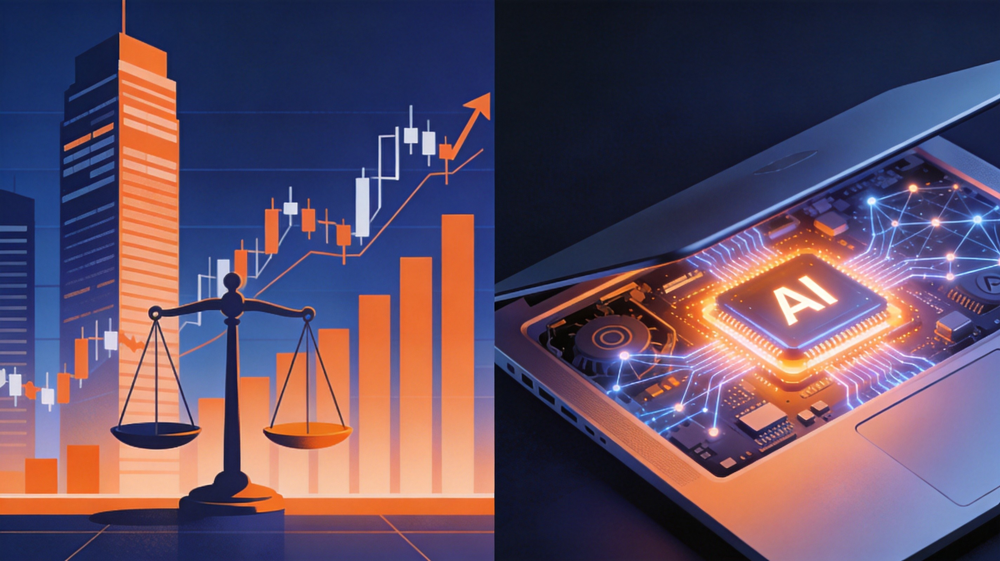
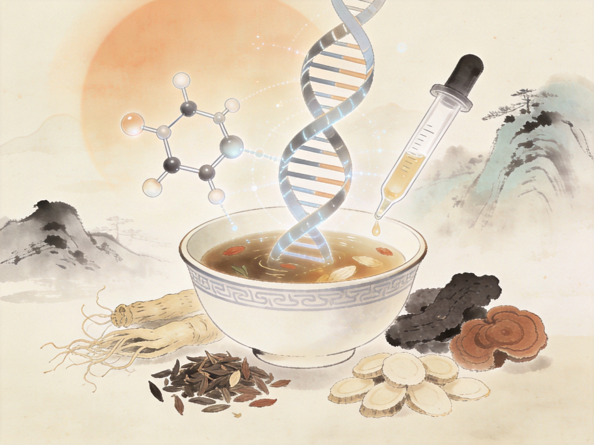
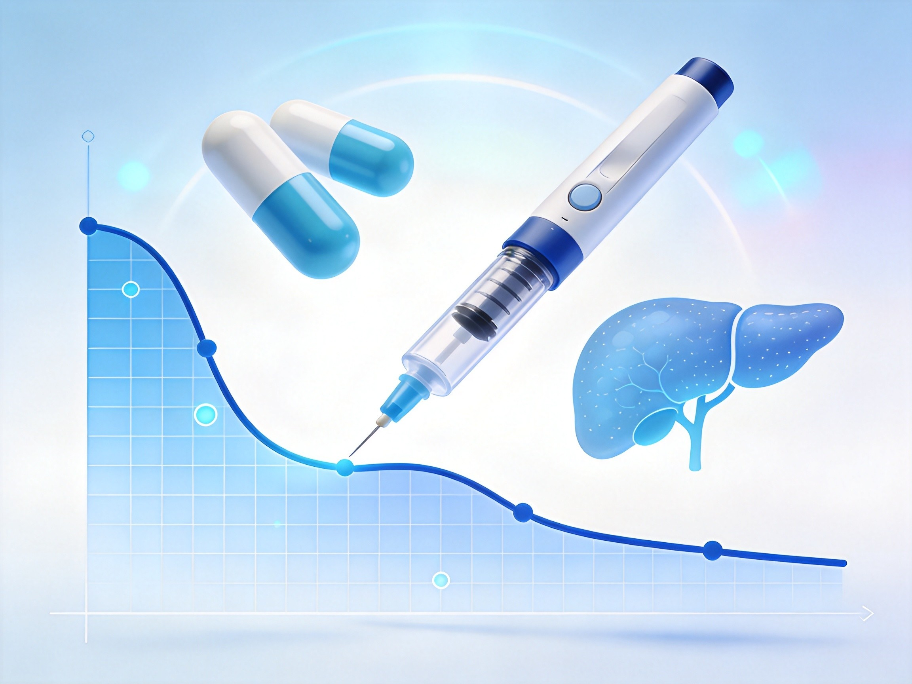

2026年10月17日 · 星期六 · VOL.180

路透社10月15日报道，在Anthropic投资者日披露最新财务数据后，部分现有及潜在IPO投资者正考虑下调估值预期，三名知情人士称旧金山会场出现约1.5万亿美元的讨论价，明显低于此前约2万亿。Anthropic第三季度营收168亿美元、环比增长约45%，单季首次实现调整后盈利与正向自由现金流，但增速较第二季度超过100%（环比147%）大幅回落，令投资者失望。其招股书同时披露未来十年与谷歌、亚马逊、微软、博通等的算力及设备承诺至少5180亿美元，约八成不可取消。
估值焦虑正外溢至整条AI基建链：10月15日英伟达支持的云厂商CoreWeave五年期CDS利差盘中升至1194.5基点、部分债券收益率升至15%-16%，黄仁勋紧急表态“英伟达无需为其财务兜底”；周五美股盘前SK海力士、美光、西部数据等AI硬件股集体跳水。然而几乎同一时刻，AI算力需求在另一端爆发——10月16日晚NVIDIA RTX Spark个人智能体PC全球开售，最高128GB统一内存、本地可跑1250亿参数智能体。微软同日宣告以1/4算力训成2.8万亿参数的MAI-Base-2、性能超GPT-5.6 Sol基座。云端为算力账单焦虑、端侧把算力下放个人桌面，成为AI产业进入“算账阶段”最鲜明的同框对比。
AI FRONTIER
10月16日晚8点，全球首款专为个人智能体打造的Windows电脑NVIDIA RTX Spark正式全球开售，华硕、戴尔、联想、微软、微星五大品牌同步推出。芯片集成Blackwell RTX GPU与Grace CPU，最高128GB统一内存、FP4下1 PFLOPS算力，本地可运行最高1250亿参数智能体、离线跑1200亿参数大模型，数据不出本机、零Token成本。华硕ProArt创16（37999元）首发迅速售罄，联想YOGA Pro 15（29999元起）同步开售。AI算力正从云端数据中心大规模下放至个人桌面。
微软10月15日宣布完成新一代SOTA基础模型MAI-Base-2预训练：MoE架构、总参数2.8万亿、激活800亿，在6000块GB200上训练38天，算力效率为DeepSeek-V4-Pro-Base的4-12倍，性能强于所有参测开源权重模型。AI主管苏莱曼在员工大会称其已超越驱动GPT-5.6 Sol的模型（代号Spud），而训练算力仅OpenAI同类的1/4，微软并已启动MAI-Base-3。微软正以高效自研模型降低对最大合作伙伴OpenAI的依赖。
10月16日，智元机器人与蚂蚁阿福合作的智慧医院导诊项目正式落地北京大学人民医院。灵犀X2机器人接入阿福AI就医助理及医疗大模型、对接医院私有知识库，承接科室指引、就诊流程、医保政策、院内导航等咨询。截至9月30日累计服务66个工作日、交互46686次、日均约707次、单日峰值1420次。人形机器人在三甲医院公共服务场景的常态化落地能力得到验证。
10月16日商务部、科技部发布2026年第48号公告，就修订《中国禁止出口限制出口技术目录》公开征求意见，拟增列人工智能、生物医药、光伏三领域40项技术，并同步实施出口前登记临时管理。AI领域涉大模型、智能体、算力集群、信息处理等23项；14项拟禁止出口（含AI驱动恶意代码生成与变异），26项限制出口；已开源或发表论文进入公共领域的技术不纳入管理。生物医药涉细胞基因治疗、小核酸药等5项。前沿AI技术贸易进入常态化安全管控阶段。
HEALTHCARE & POLICY
北京时间10月15日晚，美国《时代》周刊揭晓2026年度“全球最佳发明”，蚂蚁集团健康AI“蚂蚁阿福”入选，为今年唯一上榜中国AI应用（去年为DeepSeek）。截至9月阿福App用户达1.5亿、单日健康咨询近2000万次，连接5000家医院、30万名真人医生，三线及以下用户超8400万、中老年超30%，并推出方言与长辈模式。《时代》评其“扩大中国医疗服务可及性”。对比ChatGPT Health仍停留问答层，中国AI已打通挂号、问诊、医保结算全链路。
在智元×蚂蚁阿福落地北大人民医院同日，中国信通院联合清华大学发布《具身智能发展报告（2026）》：2026上半年全球人形机器人出货超2.2万台、同比增长近300%，文娱商演与科教数采占比超60%、导览导购约19%、智能制造约13%；中国产业链企业高度集中于京粤沪苏浙，前五省市占比超八成。具身智能正从展示体验走向真实使用、从单点验证走向规模应用。

10月16日，国家药监局批准中药创新药紫花温肺止嗽颗粒上市，列入创新药品名录；同日苑东生物公告全资子公司第三代BCR-ABL酪氨酸激酶抑制剂泊那替尼片获《药品注册证书》，用于一/二代TKI耐药及伴T315I突变的慢性髓细胞白血病、费城染色体阳性急性淋巴细胞白血病成人患者。此外泰恩康聚多卡醇注射液获批、西藏药业PCSK9体内基因编辑药ART002g1获美国FDA临床许可。中药创新与高端化药、基因治疗管线同步推进。

据36氪报道，美国犹他州今年9月批准一个新项目，AI系统将首次在没有人类医生把关的情况下为患者作出新诊断并开具处方。此前该州仅允许AI为病情稳定的慢性病患者续开“老药”，不得下新诊断或调整剂量，所有改变须经医生审核。新项目把AI权限推进到“新诊断+首处方”，在全球范围内首次越过人在回路红线，引发医疗责任与安全的广泛讨论。医疗AI自主权边界正从“医生审核”向“有限自主”谨慎试探。
承接上期叙事，Anthropic投资者日后续效应持续发酵：部分潜在投资者把估值锚从约2万亿下调至约1.5万亿美元，Q3营收168亿美元、环比增速由Q2的超100%回落至45%。尽管单季首次调整后盈利、自由现金流转正、每投入1美元算力换回1.7美元收入，但未来十年5180亿美元不可取消的云算力承诺，让市场第一次用“可持续利润”而非“增长故事”为其定价。情绪同步外溢：CoreWeave五年期CDS利差突破1190基点、美光与SK海力士盘前跳水。AI产业正从“不计成本建算力”切换到“追问每一块钱算力的回报率”，这场IPO将成为整个AI牛市的压力测试。
10月16日出现意味深长的对照——一边是黄仁勋出面回应AI基建能否支撑天量资本开支、CoreWeave信用警报拉响；另一边是NVIDIA RTX Spark开售，把1 PFLOPS算力、128GB统一内存和1250亿参数本地智能体塞进18999元起的笔记本。叠加微软以1/4算力训出超越GPT-5.6 Sol基座的MAI-Base-2、Meta开放8160亿参数权重，“云端集中训练+端侧分布式推理”的新分工正在成型：敏感数据与高频推理下沉本地，云端回归超大模型训练与重负载，算力不再是一条单向涌向超大数据中心的河流。
蚂蚁阿福成为今年唯一入选《时代》最佳发明的中国AI应用，靠的不是最大参数，而是1.5亿用户、近2000万次日咨询、连通5000家医院与30万医生，以及覆盖县城、村医、方言和老人的真实可及性；同一天，智元机器人接入阿福能力进北大人民医院承担日均707次导诊。与此同时，美国犹他州却在反向试探“AI无医生直接开处方”的自主权红线。两条路径共同勾勒出医疗AI下半场的核心命题：决定价值的不再是模型“能飞多高”，而是能否嵌入真实就医与支付闭环、能否在保证人在回路安全的前提下“接住更多人”。